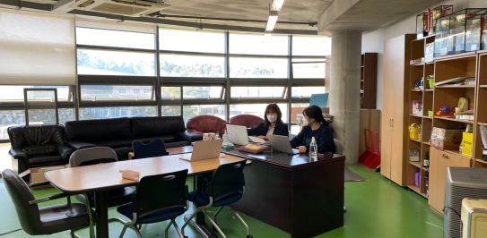
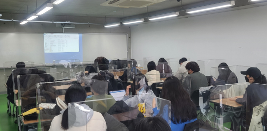
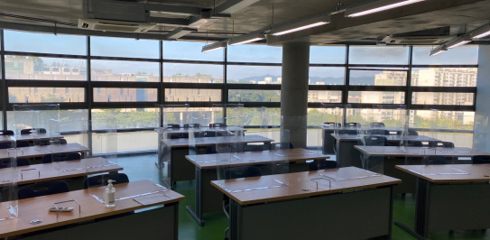
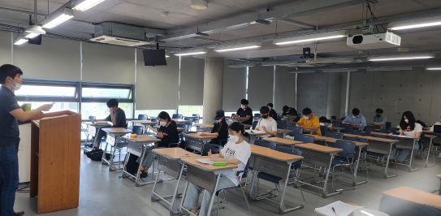

최신영상
학과소개 이미지
Department of Christian Social Welfare
기독교사회복지학과
- 01보건의료·병원행정분야, 사회복지 전분야의 핵심 실무형 전문 인력양성 목표
- 02이론과 실무적 감각을 겸비한 맞춤형 보건복지 전문인력 양성
- 03학생별 맞춤형 진로상담을 통해 정확한 진로의 탐색과 취업지원
- 04보건 및 복지 분야 4대 국가자격증(사회복지사, 보건교육사, 병원행정사, 국제의료관광코디네이터) 취득이 가능한 커리큘럼을 갖춘 학과
- 05기존의 전형적인 교육과정을 탈피하고 보건학과 사회복지학을 유기적으로 융합하여 시너지 효과를 극대화
보건학 + 사회복지학
- 전문적 실무 능력 배양보건 및 사회복지의 다학제적 교육과정에 기반한 실무 경쟁력 강화
- 진로 및 취업의 다양화이론과 실무능력 배양, 실천 현장 욕구 반영한 맞춤형 보건 복지 전문 인력 양성
- 전문 자격증 취득 교과과정노인의 복리 증진과 삶의 질 향상을 위한 전문 인력 양성
- 글로벌 소통능력 키우는 인재올바른 인성과 핵심 역량을 갖춘 전문 인력 양성
자격증 소개
국가자격증
사회복지사, 보건교육사, 국제의료관광 코디네이터
국가공인자격증
병원행정사
졸업 후 취업 기업
졸업 후 취업 기업
-
보건분야
보건복지부 및 지방자치단체 보건직 공무원, 국민건강보험공단, 건강보험심사평가원, 질병관리본부, 국립 암센터 등의 보건관련 공기업, 대학병원 원무팀, 보험팀, 생명보험 의료비 심사팀, 제약회사 마케팅팀, 고령친화산업 전문가, 대체의약 및 건강 식품회사 취업
-
사회복지분야
보건복지부 및 지방자치단체 사회복지 전담공무원, 교정직 공무원 및 보호관찰직 공무원, 근로복지공단, 국민연금공단, 장애인고용촉진공단 등 복지관련 공기업, 종합사회복지관, 대기업 사회공헌팀 및 각종 사회복지재단의 사회복지사, 병원 의료사회사업실(의료사회복지사), 정신건강복지센터(정신건강사회복지사) 등
주요전공 교육과정
이론 교육 및 현장실습



